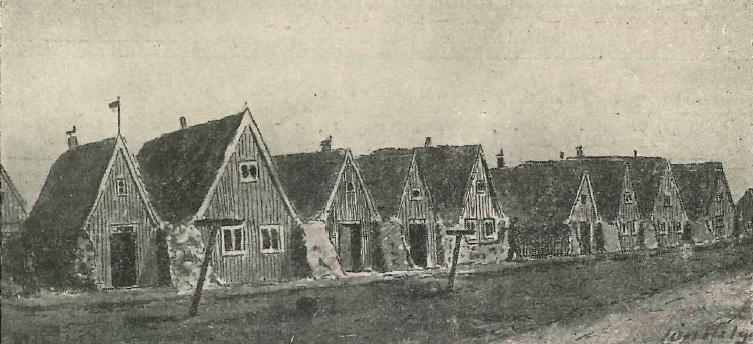
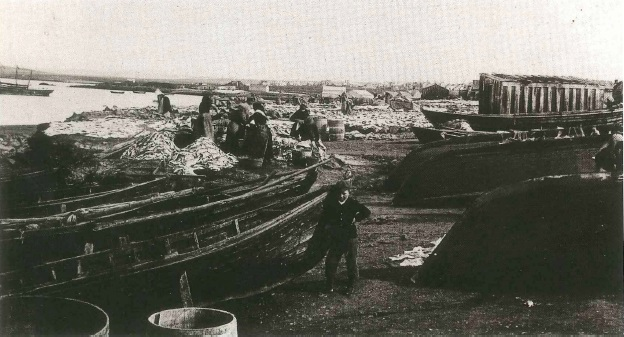
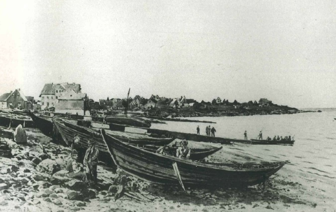

um 1870
Hlíðarhúsabæirnir um 1870 samkvæmt málverki Jóns Helgasonar biskups. Hlíðarhúsabæirnir voru: Norðurbær, Vesturbær, Sund, Skáli, Miðbær, Jónsbær og Austurbær. Allir þessir bæir nema Vesturbærinn voru rifnir fyrir aldamótin 1900. Hlíðarhús stóðu þar sem nú er Vesturgata 24 og 26 og skáhallt niður að gatnamótum Ægisgötu og Nýlendugötu.

Málverk eftir Jón Helgasonum 1870

Uppsátur Hlíðarhúsamannaum 1900
um 1900
Uppsátur Hlíðarhúsamanna nálægt aldamótunum 1900, en Hlíðarhúsamenn voru annálaðir sjósóknarar.
1872
Bátar í fjörunni hjá Hafnarstræti. Stóra húsið vinstra megin á myndinni er Glasgow. Hægra megin við Glasgow má sjá bæi við Vesturgötu og í Hlíðarhúsalandi. Allmargir torfbæir tómthúsmanna stóðu á þessu svæði. Myndin er tekin árið 1872.

Bátar í fjörunni við Hafnarstræti1872